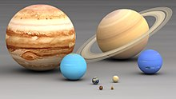
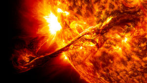

Sistemul solar este format din Soare împreună cu sistemul său planetar (care cuprinde opt planete împreună cu sateliții lor naturali) și alte obiecte non-stelare.
El s-a format acum 4,6 miliarde de ani, ca urmare a colapsului gravitațional al unui gigant nor molecular. Cel mai masiv obiect este steaua centrală - Soarele, al doilea obiect ca masă fiind planeta Jupiter. Cele patru planete interioare mici, Mercur, Venus, Pământul și Marte, numite planete terestre / planete telurice, sunt compuse în principal din roci și metal. Cele patru planete exterioare, numite giganți gazoși, sunt mult mai masive decât cele telurice. Cele mai mari două planete, Jupiter și Saturn, sunt compuse în principal din hidrogen și heliu; cele două planete mai îndepărtate, Uranus și Neptun, sunt compuse în mare parte din substanțe cu o temperatură de topire relativ ridicată (comparativ cu hidrogenul și heliu), numite ghețuri, cum ar fi apa, amoniacul și metanul. Ele sunt denumite „giganți de gheață” (termen distinct de cel de „gigant gazos”). Toate planetele au orbite aproape circulare dispuse într-un disc aproape plat numit plan ecliptic.

Planetele sistemului solar reprezentate la scară: Jupiter și Saturn (rândul de sus), Uranus și Neptun (mijloc), Pământul și Venus (jos mijloc), Marte și Mercur jos.
Descoperire și explorare
Timp de câteva mii de ani umanitatea, cu puține excepții, nu a recunoscut existența sistemului solar. Oamenii credeau că Pământul se află în centrul Universului și este cu totul diferit de celelalte obiecte divine și eterice care se mișcă pe cer. Deși filozoful grec Aristarh din Samos a speculat despre reorganizarea heliocentrică a cosmosului,[15] Nicolaus Copernicus a fost primul astronom care a dezvoltat un sistem matematic heliocentric predictiv.[16] Succesorii săi din secolul al XVII-lea (Galileo Galilei, Johannes Kepler și Isaac Newton) au avut o înțelegere a fizicii care i-a condus la admiterea graduală a ideii că Pământul se rotește de fapt în jurul Soarelui și că celelalte planete sunt guvernate de aceleași legi ale fizicii care guvernează și Pământul. În plus, inventarea telescopului a condus la descoperirea unor planete și sateliți noi. În timpurile mai recente, îmbunătățiri ale telescoapelor și folosirea navelor spațiale fără echipaj au deschis drumul studierii fenomenelor geologice din sistemul solar (studiul munților și craterelor de impact) și a fenomenelor meteorologice sezoniere de pe unele planete (cum ar fi norii, furtunile de nisip și calotele de gheață).
Geneză și evolutie
Sistemul solar s-a format acum 4,568 miliarde de ani, în urma colapsului gravitațional al unei regiuni din cadrul unui vast nor molecular.[41] Acest nor inițial avea un diametru de mai mulți ani-lumină și a dat naștere, probabil, mai multor stele.[42] La fel ca și majoritatea norilor moleculari, acesta era constituit, în principal, din hidrogen, mai puțin heliu și cantități mici de elemente mai grele formate în generațiile anterioare de stele. Când regiunea care avea să devină sistemul solar, denumită și nebuloasă pre-solară,[43] a suferit un colaps, conservarea momentului cinetic a determinat-o să se rotească mai repede. Centrul, unde s-a concentrat cea mai mare parte a masei, a devenit din ce în ce mai fierbinte în raport cu discul din jur.[42] Nebuloasa în contracție, rotindu-se tot mai repede, a început să se aplatizeze și a luat forma unui disc protoplanetar cu un diametru de aproximativ 200 UA,[42] având o protostea fierbinte și densă în centru.[44][45] Protoplanetele formate în urma acreției din acest disc de praf și gaz[46] interacționau gravitațional, formând - prin contopire - corpuri din ce în ce mai mari. Sute de protoplanete au putut exista în sistemul solar timpuriu, dar acestea fie au fuzionat, fie au fost distruse, formând planete și planete pitice, iar resturile devenind obiecte minore.
Din cauza punctului lor de fierbere foarte mare, numai metalele și silicații au putut rezista în sistemul solar interior fierbinte, aproape de Soare, iar acestea au format planetele de rocă Mercur, Venus, Terra și Marte. Deoarece elementele metalice constituiau doar o fracțiune foarte mică din nebuloasa solară, planetele terestre nu au putut deveni foarte mari. Giganții gazoși (Jupiter, Saturn, Uranus și Neptun) s-au format mai departe de Soare, dincolo de linia de îngheț: punctul dintre orbita lui Marte și a lui Jupiter începând de la care materia este suficient de rece pentru a permite compușilor volatili să rămână solizi. Ghețurile care formau aceste planete au fost mai numeroase decât metalele și silicații, care formau planetele terestre interioare, permițându-le să devină destul de masive pentru a capta atmosfere mari de hidrogen și heliu, elementele cele mai ușoare și mai abundente. Resturile care nu au devenit planete s-au concentrat în regiuni ca centura de asteroizi, centura Kuiper și norul lui Oort. Modelul de la Nisa este o explicație a creării acestor regiuni, precum și a modului în care planetele exterioare s-au putut forma în poziții diferite și au migrat, ajungând să aibă orbitele lor actuale prin diverse interacțiuni gravitaționale.
După 50 de milioane de ani, presiunea și densitatea hidrogenului din centrul protostelei au devenit suficient de mari pentru ca să înceapă fuziunea termonucleară.[47] Temperatura, viteza de reacție, presiunea, precum și densitatea au crescut până când a fost atins echilibrul hidrostatic: presiunea termică a egalat forța gravitațională. În acel moment, Soarele a devenit o stea din secvența principală de stele.[48] Vântul solar a creat heliosfera și a măturat gazul și praful rămase din discul protoplanetar în spațiul interstelar, punând capăt procesului de formare a planetelor.
Sistemul solar va rămâne aproximativ așa cum îl știm astăzi până când hidrogenul din nucleul Soarelui va fi complet transformat în heliu, eveniment ce va avea loc peste 5,4 miliarde de ani. Acest lucru va pune sfârșit perioadei principale de viață a Soarelui. În acel moment, nucleul Soarelui va suferi un colaps, iar energia produsă va fi mult mai mare decât în prezent. Straturile exterioare ale Soarelui se vor extinde, diametrul ajungând de circa 260 de ori mai mare decât în momentul actual și Soarele va deveni o gigantă roșie. Din cauza faptului că suprafața sa va crește foarte mult, ea va fi considerabil mai rece decât va fi fost în perioada principală a vieții lui (cu maximum 2600 K).[49] În urma măririi Soarelui, Mercur și Venus se vor vaporiza iar planeta Pământ va deveni nelocuibilă, zona locuibilă mutându-se la orbita lui Marte. În cele din urmă, nucleul nu va mai fi suficient de fierbinte pentru fuziunea heliului; Soarele va arde heliul pentru o fracțiune a timpului în care a ars hidrogenul din nucleu. Soarele nu este destul de masiv pentru a începe fuziunea elementelor mai grele, și reacțiile nucleare din nucleu vor scădea. Straturile sale exterioare vor fi ejectate în spațiu, lăsând în urmă o pitică albă, un obiect extraordinar de dens, având jumătate din masa inițială a Soarelui (de mărimea Pământului).[50] Straturile exterioare ejectate vor forma ceea ce este cunoscut sub numele de nebuloasă planetară, împrăștiind în mediul interstelar unele din materialele din care s-a format Soarele, dar și elemente mai grele, cum ar fi carbonul, create în Soare.

O protuberanță solară surprinsă de Observatorul Dinamicii Solare în august 2012.
Soarele
Soarele este steaua sistemului solar și de departe cel mai important component al acestuia. Masa sa mare (egală cu 332.900 de mase terestre) produce în nucleul său temperaturi și densități suficient de ridicate ca să susțină fuziunea nucleară, care eliberează o cantitate enormă de energie, din care cea mai mare parte radiază în restul sistemului sub formă de radiații electromagnetice, cu vârful situat în spectrul de 400-700 nm al luminii vizibile.
Soarele este clasificat ca fiind o pitică galbenă de tipul G2, dar acest nume poate induce în eroare, din moment ce comparativ cu majoritatea stelelor din galaxia noastră, Soarele este mai mare și mai luminos. Stelele sunt clasificate cu ajutorul diagramei Hertzsprung–Russell, o diagramă care reprezintă grafic luminozitatea stelelor împreună cu temperatura de la suprafața lor. În general, stelele mai fierbinți sunt mai luminoase. Stelele care satisfac această relație sunt denumite stele din secvența principală, iar Soarele se află chiar în mijlocul acestei secvențe. Totuși, stelele mai luminoase și mai fierbinți decât Soarele sunt rare, în timp ce stelele cu mult mai fade și mai reci, cunoscute și ca pitice roșii, sunt comune, reprezentând 85% din totalul stelelor din galaxie.
Unele dovezi sugerează că poziția Soarelui în secvența principală poate înseamna că acesta se află la mijlocul ciclului de viață al unei stele, pentru că nu și-a consumat încă rezerva de hidrogen folosit pentru fuziunea nucleară. Soarele devine tot mai luminos; mai devreme în evoluția sa, luminozitatea era doar 70% din cea actuală.
Soarele face parte din populația I de stele; a luat naștere în faza târzie a evoluției universului și astfel conține mai multe elemente mai grele decât hidrogenul și heliul (numite „metale”, în context astronomic) decât stelele mai vechi ce fac parte din populația a II-a. Elementele chimice mai grele decât hidrogenul și heliul s-au format în nucleele stelelor vechi care au explodat, așadar prima generație de stele a trebuit să dispară pentru ca universul să se poată îmbogăți cu aceste elemente. Stelele mai vechi conțin mai puține metale, în timp ce stelele născute mai târziu conțin mai multe. Se crede că acest conținut mai bogat în metale a fost crucial pentru ca Soarele să dezvolte un sistem planetar, deoarece planetele se formează prin acreția „metalelor”.
Contextul galactic
Sistemul solar este localizat în galaxia Calea Lactee, o galaxie spiralată cu un diametru de aproximativ 100 000 de ani-lumină, ce conține în total circa 200 de miliarde de stele.[131] Ca localizare generală, Soarele se află în cadrul uneia dintre brațele (sau spiralele) exterioare ale Căii Lactee, cunoscut ca Brațul Orion, sau „Pintenul Local”.[132] Soarele se află la aproximativ 25 000 și 28 000 de ani lumină distanță de Centrul Galactic,[133] iar viteza sa în raport cu galaxia este de aproximativ 220 de kilometri pe secundă, astfel completează o revoluție galactică odată la 225-250 de milioane de ani. Această revoluție este cunoscută în limbajul științific ca an galactic al sistemului solar.[134] Apexul solar, punctul spre care Soarele se deplasează în mișcarea lui prin Calea Lactee, se află în apropierea stelei strălucitoare Vega, dar la zona mărginașă dintre constelațiile Lira și Hercule.[135] Planul eclipticei se află la un unghi de aproximativ 60° față de planul galactic.[f]
Localizarea sistemului solar în galaxie este factorul care a determinat evoluția vieții pe Pământ. Orbita sa este aproape circulară, și vitezele orbitale din apropierea Soarelui sunt aproape la fel de rapide ca și cele ale brațelor spirale. Prin urmare, Soarele tranzitează brațele galaxiei foarte rar. Deoarece în zona orbitală a Soarelui (adică în zona brațelor spirale) există mai puține supernove, instabilități gravitaționale și radiații care ar putea distruge sistemul solar, astfel Pământul a avut lungi perioade de stabilitate în care viața a putut să prospere.[137] De asemenea, sistemul solar se află poziționat cu mult în afara zonelor foarte aglomerate cu stele ale centrului galactic. În apropierea centrului, forțele gravitaționale venite de la alte stele ar putea smulge obiectele afla în Norul lui Oort și să trimită multe comete înspre sistemul solar interior, producând coliziune cu probabile implicații catastrofale pentru viața de pe Pământ. Radiațiile intense ale centrului galactic ar putea, de asemenea, să perturbe evoluția formelor de viață complexe.[137] Chiar și pentru localizarea curentă a sistemului solar, unii savanți au presupus ca acum 35 000 de ani, unele supernove să fi afectat negativ viața de pe Pământ, prin aruncarea unor fragmente de nucleu stelar spre Soare sub forma unor fire de praf radioactive și chiar obiecte mai mari, asemănătoare cometelor.[138]
În imediata vecinătate galactică a sistemului solar se află Norul Local Interstelar, un nor astronomic dens dintr-o altă regiune împrăștiată cunoscută ca Bula Locală, o cavitate în formă de clepsidră din mediul interstelar de cel puțin 300 de ani lumină în lungime. Bula este saturată cu plasmă de temperatură înaltă ceea ce sugerează că a fost produsă recent de unele supernove.